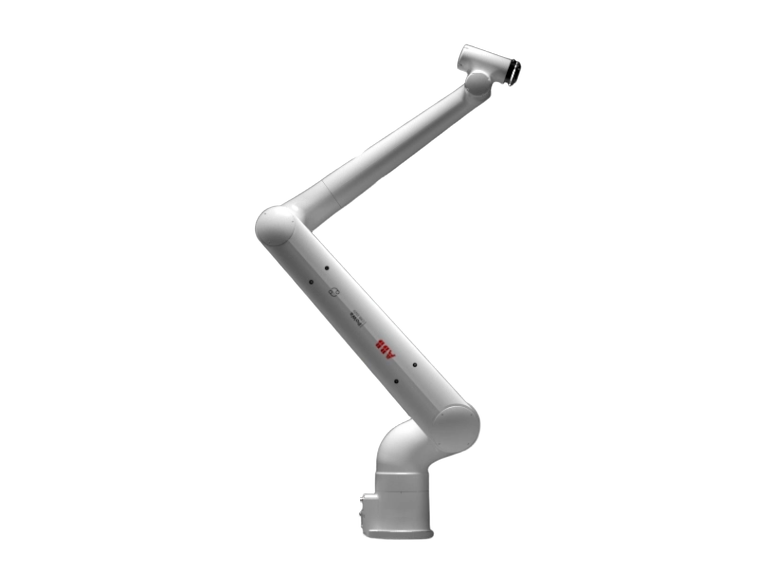
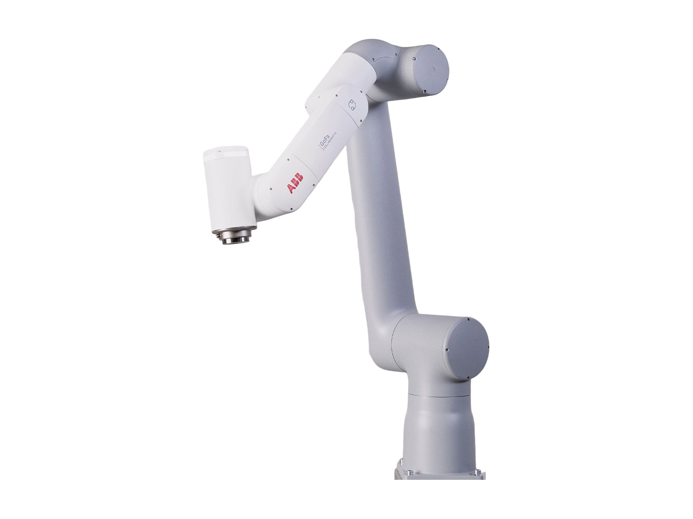
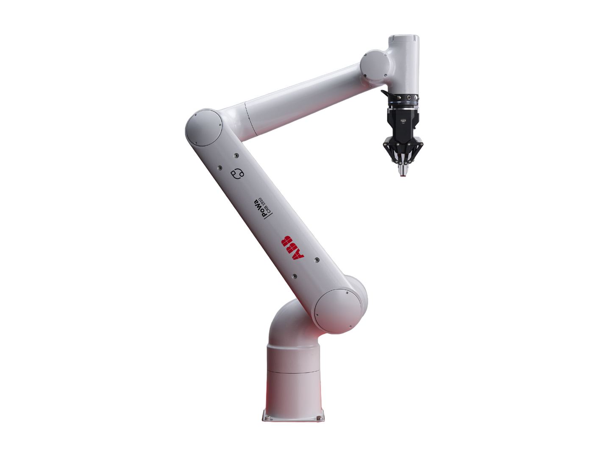
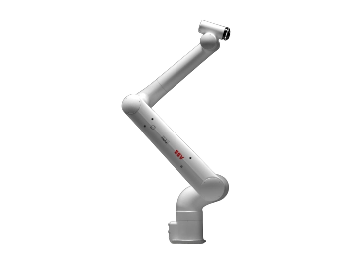

PoWa 16 (CRB 1920-16/1.96)
A robot arm from Sweden, first released 2026.
Sources retrieved: 4 November 2026 (A, B, C, D)
- Status
- In production
- Intended use, per the manufacturer
- Not stated
- Indicative price
- Not stated

Product render from the manufacturer's own website (abb.com).
Specifications
14/22 specifications disclosed 8 not stated
8 fields hidden
How to read the figuresShow guideClose
- not statedNo source
- noStated by a source
- 0Reported as zero
- ASource
- A*Source with a caveat (select it)
- CERecords only what the manufacturer states regarding CE marking.
Select a source marker for source details and notes.
Performance5/5 disclosed
Physical5/5 disclosed
Mounting, power and communication3/4 disclosed
Sensing and autonomy0/2 disclosed
Commercial0/1 disclosed
Compliance & certifications1/5 disclosed
Against the field
Each strip holds every robot of this type in the guide that states the figure, one bar per group of values. Further right means a larger figure, not a better robot. A taller bar means more robots in that group.
Payload
16kg35.3lbOur conversion from 16 kg. The manufacturer does not state an imperial figure itself, so the conversion has no source of its own.
34 robot arms state a payload
10 state a higher figure, 23 a lower one.
Reach
2,100mm82.7inOur conversion from 2.1 m. The manufacturer does not state an imperial figure itself, so the conversion has no source of its own.
34 robot arms state a reach
0 state a higher figure, 33 a lower one.
Weight
63kg139lbOur conversion from 63 kg. The manufacturer does not state an imperial figure itself, so the conversion has no source of its own.
32 robot arms state a weight
6 state a higher figure, 24 a lower one. 1 more states exactly the same figure. Log scale: each step along the axis multiplies the value.
Degrees of freedom
6DoF
28 robot arms state degrees of freedom
3 state a higher figure, 1 a lower one. 23 more state exactly the same figure.
Notes
ABB Robotics launched the PoWa cobot family on 22 April 2026.
ABB states that the PoWa cobot family is now available globally.
The CRB 1920-16/1.96 meets ISO Class 4 cleanroom requirements at 100% velocity.
The robot allows 10 kg on axis 3 or the lower arm.
Sources
One line per source, not per figure: a source has one retrieval date.
- Asearch.abb.com/library/Download.aspx?DocumentID=3HAC097952-001&LanguageCode=en&DocumentPartId=&Action=LaunchSecondary. Retrieved 4 November 2026
- Bsearch.abb.com/library/Download.aspx?DocumentID=9AKK108472A3608&LanguageCode=en&DocumentPartId=&Action=LaunchSecondary. Retrieved 4 November 2026
- Cabb.com/global/en/areas/robotics/products/robots/collaborative-robots/powaMain source. Retrieved 4 November 2026
- Dsearch.abb.com/library/Download.aspx?DocumentID=3HAC102712-001&LanguageCode=en&DocumentPartId=&Action=LaunchSecondary. Retrieved 4 November 2026
More robots
Same manufacturer
- No photograph
GoFa 10 (CRB 15000-10/1.52)ABB

GoFa 12 (CRB 15000-12/1.27)ABB
- No photograph
IRB 1700-12/1.45ABB

PoWa 10 (CRB 1910-10/1.52)ABB

PoWa 13 (CRB 1910-13/1.34)ABB

PoWa 20 (CRB 1920-20/1.67)ABB